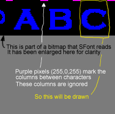

BitmapFont is made with the SFont library and prints text with bitmaps. It is maintained by Karl Bartel on Linux Games
Here is Karl's README:
FileFormat:
The font file can be any type image file. The characters start with ASCII symbol #33. They are seperated by pink(255,0,255) lines at the top of the image. The space between these lines is the width of the caracter. Just take a look at the image, and you'll be able to understand what I tried to explain here.
Example for the font file format is in this picture: 
The easiest way to create a new font is to use the GIMP's Logo function. Use the following string as text (ASCII 33-127 with escape sequences and spaces between the letters):
! \" # $ % & ' ( ) * + , - . / 0 1 2 3 4 5 6 7 8 9 : ; < = > ? @ A B C D E F G H I J K L M N O P Q R S T U V W X Y Z [ \\ ] ^ _ ` a b c d e f g h i j k l m n o p q r s t u v w x y z { | } ~
Creates a new BitmapFont from the drawn characters in surface.
To load a font directly from disc,
use Surface.load_new('fontfilename') as the argument to new.
Puts text on surface at coordinate which is an array of [x, y].
Puts text on surface at y-coordinate y in the horizontal center of the screen.
Returns the size in pixels that text will take when written.
Using TrueTypeFonts is easy. You open a TTF file with new specifying its filename and size. You render text with it by calling render, and you get a new surface containing the image. If you use antialiasing and no background color, the returned surface will have per-pixel alpha values, to retain the antialiasing after blitting to a target surface.
Creates a new TrueTypeFont object. filename is the filename of a TTF file. size is the desired height of the font in pixels.
Returns the ascent for the font. The ascent is the number of pixels from the font baseline to the top of the font.
Controls the bold attribute for the font. Making the font bold does not work as well as you would expect.
Returns the descent for the font. The descent is the number of pixels from the font baseline to the bottom of the font.
Returns the average size of each glyph in the font.
Controls the italics attribute of the font.
Returns the linesize for the font. Each font comes with its own recommendation for the number of spacing pixels between each line of the font.
Render the given text onto a new image surface. If antialias is true, the edges of the font will be smoothed for a much cleaner look.
The foreground and background colors are both RGBA, but the alpha component is ignored if given. If the background color is omitted, the text will have a transparent background.
Returns the size in pixels that this text would need.
Controls the underline attribute of the font.